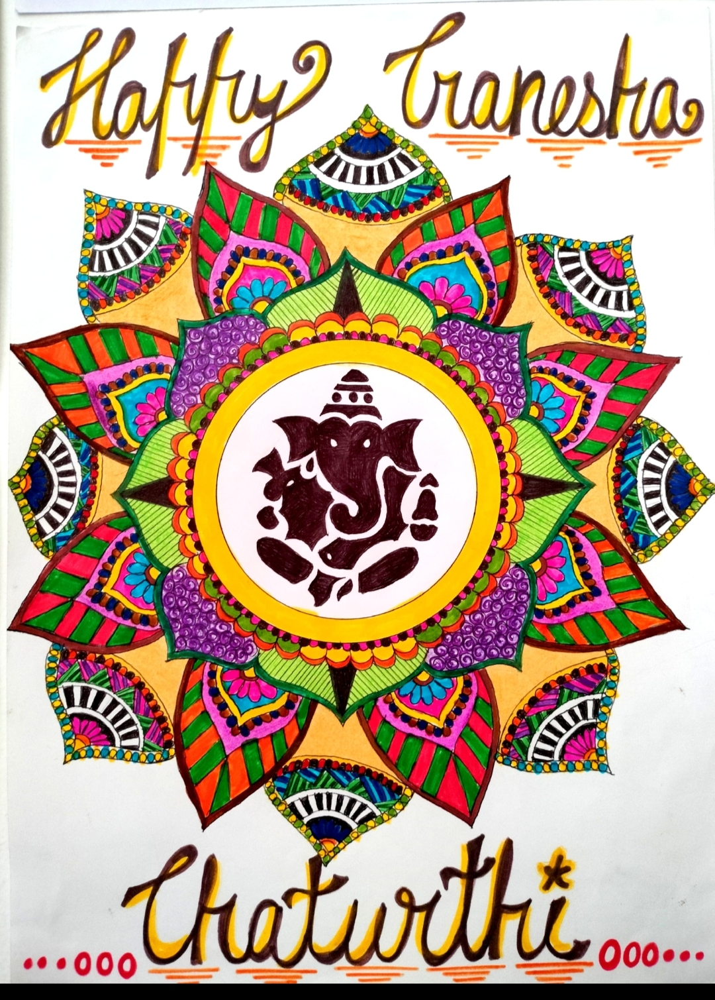
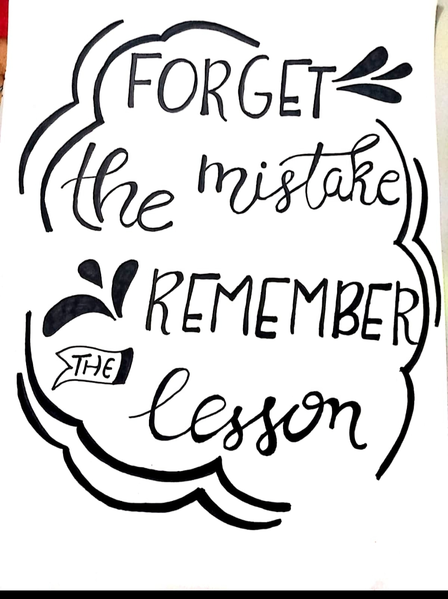

My Hobbies
Kho-Kho
- I just took part in a kho kho inter-hostel competition at my college.First place in that competition went to our kho kho squad. I competed in regional kho kho at my school.Below are some pictures of the game.
Badminton
- I recently took part in a badminton competition between hostels.I used to play badminton at home with my loved ones and pals. Every time I play, it makes me happy.

Drawing
- My pastime is drawing. I like to create inspirational quotations whenever I'm feeling joyful, and I've taken part in several sketching competitions at my school.Below are some of my Drawings pictures.


Dancing
- I have studied a variety of dance styles during my time in school, including gujarati, bengali, marathi, classical dance, rajasthani, etc.Below are some pictures of my dancing group.